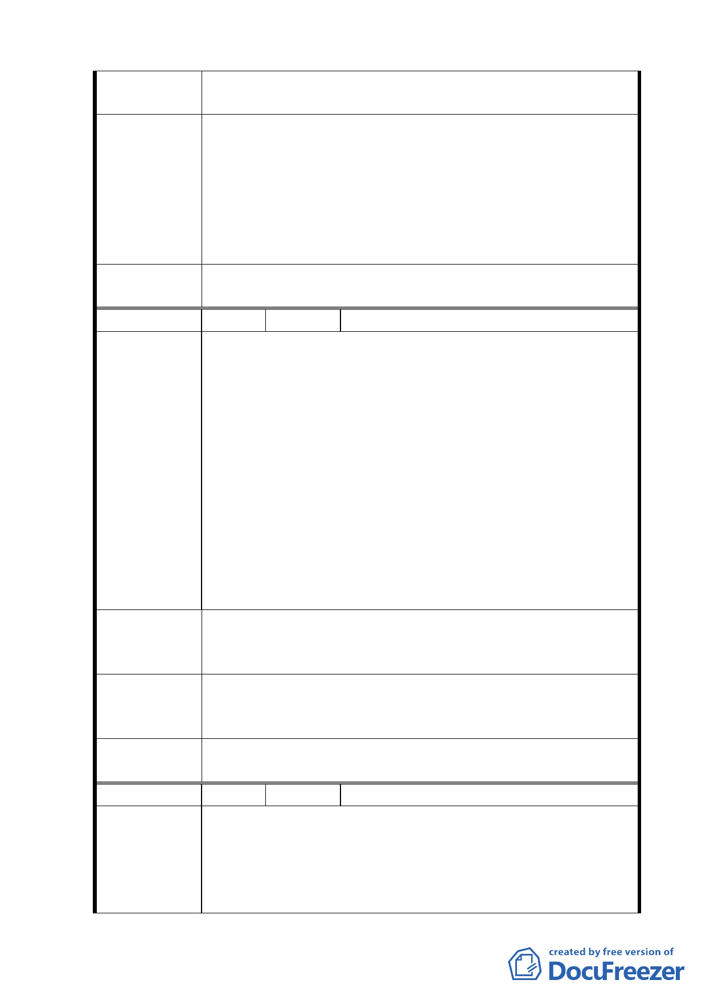

建議辦法
一、將電力設施移至山坡地或公園邊角。
二、縮小公園比例。
一、本案經地政處以發還土地比例 40％估算結果，財務上
仍相當困難；本建議錄請市府參考。
專案小組
審查結論
二、電力設施用地規模及位置，係配合台電公司於本地區之
電力輸送需求配置，將於細部計畫劃設緩衝空間，減
低對環境景觀之影響。
三、公園用地係考量地形現況及未來多目標使用需求劃設，
為提供地區所需公共設施，公園用地比例不宜縮小。
委員會決
議
同專案小組審查結論。
編 號 ８ 陳情人 臺北市文山區樟腳里辦公處
一、因為擴大部份為北二高下方，高速公路開闢時已留五十
公尺為保護道基使用，扣除五十公尺後即為斜坡不多
之小山坡地。
二、依據開發方式圖示以及八月十九日說明會，本案計畫必
須運入大量砂土增高，如擴大範圍可以就此小山坡之土
利用就可減小由外地運土之苦。
陳 情 理 由 三、如果未採納擴大範圍請問夾在中間此土地，將來如何使
用，而且將來大量填土由那條橋運入。北二高興建時大
量之土由恆光橋運出造成整條橋之損壞，最後恆光橋重
建，當時北二高欠市政府將近二百萬無還，在養工處有
案可查。
四、如果將來必須由恆光橋大量運土出入，必有沿街居民抗
議之準備。
一、建議擴大計畫範圍（至北二高沿線）。
建 議 辦 法 二、減少公共設施，增加地主之分配比率，依公告圖示公園
等公共設施占用太多，即造成地主分配率少無法接受。
專案小組
審查結論
一、所提建議位置非本案計畫範圍，錄請市府另案檢討。
二、公園用地係考量地形現況及未來多目標使用需求劃設，
為提供地區所需公共設施，公園用地不宜縮小。
委員會決
議
同專案小組審查結論。
編 號 ９ 陳情人 陳德龍等四人
一、土地標示：文山區老泉段一小段五 0 二、五 0 七、五 0
八、五一 0 地號。
陳 情 理 由 二、查上述陳情人等土地目前為農業用地，其中二分之一種
植綠竹筍，另二分之一為無償提供該案老泉里里民出入
及農產品等、東山高中及道生幼稚園上學放學活動等對
一〇